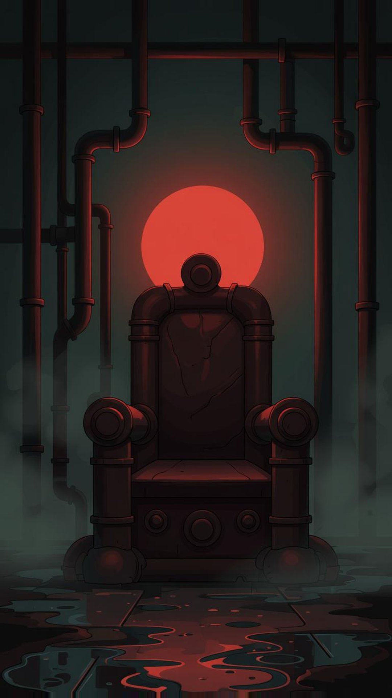
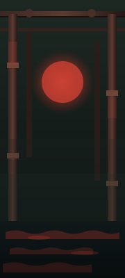

Сдача по ТЗ-ZAI-фоны-героев-26.10 · ветка zai/hero-bg · сделала ZAI 26.10
Выбор: путь А — фон вынесен с арта нейронкой. Причина: он сохраняет ровно ту сцену, что на арте героя (трон из труб и красный круг у Крысы, нимб-роза и растр у Венатора) — игрок видит то же место за видео, что и на карточке арта, ничего не расходится. SVG (путь Б) приложены рядом как запасной лёгкий вариант (3.4–3.7 КБ против 130–190 КБ), но они плоские и проигрывают арту по атмосфере.
Варианты

Крысиный король путь Аrat-king.jpg · 1080×1920 · 128 КБ · эдит арта нейронкой

Крысиный король путь Бrat-king.svg · 180×400 · 3.4 КБ · живые: hb-wv, hb-glow
Исходник Венатора — полный арт 2560×1440 из claude/hero-16x9. Улучшенный кадр (640×360, из него делался venator-2.mp4) проверила: слишком мал и бока заблюрены — для фона 1080×1920 не годится.
Правила: как проверить, что фон не спорит с героем
Чёрный экран 360×780. Фон открывается один, без героя, страница эта — как раз он.
Зона видео. Включи тумблер выше: 60% ширины × 55% высоты, снизу. Всё, что попало внутрь, игрок никогда не увидит — там ляжет видео героя.
Читается ли «чей фон». По верхним 35% и краям должно быть понятно, чьё это место, за полсекунды: у Крысы — трубы и красный круг, у Венатора — нимб с лучами. Не видно — фон не годится.
В зоне видео не должно быть важных деталей. Глаза-ловушки: лица, круги, яркие пятна в центре кадра. Всё главное — сверху и по краям, середина спокойная и темнее.
Герой читается. Мысленно положи тёмный силуэт героя в зону: фон в середине должен быть темнее героя, а самый яркий объект фона — над головой (красный круг, нимб), не за торсом.
Один акцент цвета. У фона один главный цвет-акцент, не конфликтующий с костюмом героя: красный свет у зелёно-бурой Крысы, серый нимб у чёрно-фиолетового Венатора. Два ярких цвета = каша.
Мелкий шум — только по краям. Растр, мазки, капли — не в середине. В середине они выглядят грязью поверх видео.
Анимация не оттягивает взгляд. Двигается 1–2 группы, медленно (лучи, вода, мерцание точек), у краёв/сверху. Если движение в центре ярче героя — выключить.
Оживление (путь А): промты для Flow — 8 с, петля
Генерации видео у меня нет — ролики сгенерит Андрей в Flow (Veo), петлю соберёт Claude через tools/hero_loop.py. Правила: камера стоит, двигается только свет и мелочь, ничего не появляется и не пропадает, первый и последний кадр совпадают.
[Крысиный король]
Slow cinematic loop, camera locked. A dark sewer throne room: the red-orange
round light glows steady behind an empty iron throne of pipes. A thin film of
water on the dark floor slowly flows toward the viewer, red reflections ripple
gently across it. A faint red light reflection slowly crawls along the rusty
pipes at the sides. Nothing appears or disappears, no characters, no animals,
no text. First and last frames identical.
[Венатор]
Slow cinematic loop, camera locked. A dark charcoal-purple sky: a big grey
circular stone halo with thin radiating lines in the upper third slowly
rotates, the halftone dots around it shimmer very gently. Dark violet paint
strokes at the bottom stay still. Nothing appears or disappears, no people,
no faces, no crosses, no candles, no text. First and last frames identical.
План
✓ 25.10 — ветка zai/hero-bg: путь А (2 jpg) + путь Б (2 svg) + эта страница + правила.
Андрей смотрит; если ок — Клауд заливает в R2 (ключи и деплой на нём), при желании оживляет через Flow-промты выше и собирает петли.
Остальные герои — когда Андрей скажет: путь А по той же схеме (промты-шаблоны из ТЗ), у каждого героя 4 цвета и 1 мотив с арта.